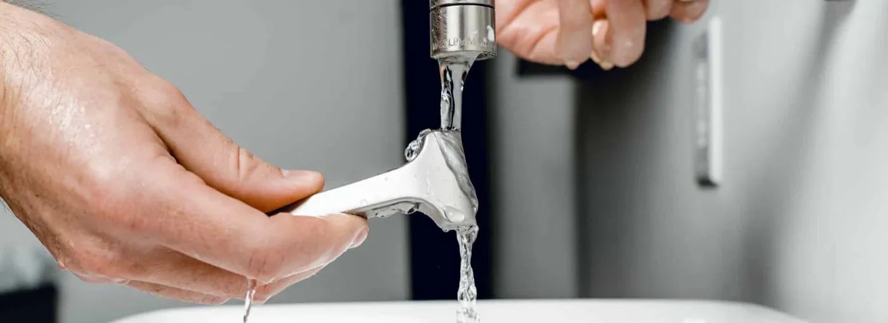

Vi lyssnar.
Du berättar vad du vill göra. Vi ställer frågorna som behövs för att förstå ditt hem och dina önskemål.
För fastighetsägare och föreningar som vill ta hand om sina avlopp.

Vi hjälper fastighetsägare och bostadsrättsföreningar med stamspolning. Tillsammans går vi igenom fastighetens förutsättningar, arbetets omfattning och hur uppdraget kan planeras.
Vi börjar med att lyssna. Berätta vad du behöver hjälp med och var fastigheten ligger. Bilder eller ritningar är en bra början inför vårt samtal.
Ring 0152–152 93Vi arbetar med företag och bostadsrättsföreningar i Strängnäs med omnejd. Kontakta oss och beskriv fastigheten.
Skicka uppgifter om fastigheten, antal lägenheter eller lokaler och vad ni behöver hjälp med. Vi återkommer och går igenom uppdraget.
Du berättar vad du vill göra. Vi ställer frågorna som behövs för att förstå ditt hem och dina önskemål.
Vi går igenom omfattning och material, tar fram ett prisförslag och kommer överens om nästa steg.
Erfarna rörmokare utför arbetet med omsorg om installationerna och platsen där du bor.
Vi börjar med ett samtal.
Berätta vad du behöver, så tar vi det därifrån.